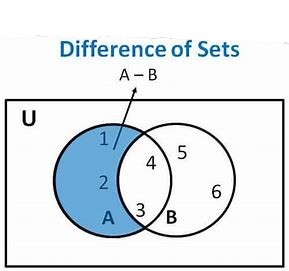
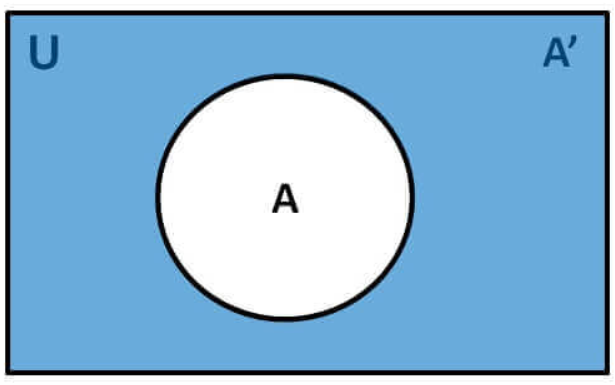

Set Difference/ Relative Complement:
The set difference of sets A and B (denoted by A–B) is the set of
elements which are only in A but not in B. Hence, A−B={x|x∈A AND
x∉B}
Example:
1. If A={10,11,12,13} and B={13,14,15}, then (A−B)={10,11,12} and
(B−A)={14,15}. Here, we can see (A−B)≠(B−A)
2. The difference of {1,3,5} and {1,2,3} is the set {5}; that is,
{1,3,5}−{1,2,3}={5}. This is different from the difference of
{1,2,3} and {1,3,5}, which is the set {2}.
3. The difference of the set of computer science majors at your
school and the set of mathematics majors at your school is the set
of all computer science majors at your school who are not also
mathematics majors.

The shaded area inside the circle that represents A and outside
the circle that represents B is the area that represents A −
B.
Complement of a Set:
The complement of a set A (denoted by A′) is the set of elements
which are not in set A. Hence, A′ ={x|x∉A}. More specifically, A′
=(U−A) where U is a universal set which contains all objects.
Example:
1. If A={x|x belongs to set of odd integers} then A′={y|y does not
belong to set of odd integers}
2. Let A={a,e,i,o,u}(where the universal set is the set of letters
of the English alphabet).
Then A={b,c,d,f,g,h,j,k,l,m,n,p,q,r,s,t,v,w,x,y,z}.

This video will explain the concepts of union, intersection and complement